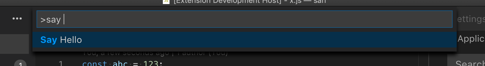

Commands
Commands trigger actions in Visual Studio Code. If you have ever configured a keybinding, then you've worked with commands. Commands are also used by extensions to expose functionality to users, bind to actions in VS Code's UI, and implement internal logic.
Using Commands
VS Code includes a large set of built-in commands that you can use to interact with the editor, control the user interface, or perform background operations. Many extensions also expose their core functionality as commands that users and other extensions can leverage.
Programmatically executing a command
The vscode.commands.executeCommand API programmatically executes a command. This lets you use VS Code's built-in functionality, and build on extensions such as VS Code's built-in Git and Markdown extensions.
The editor.action.addCommentLine command, for example, comments the currently selected lines in the active text editor:
import * as vscode from 'vscode';
function commentLine() {
vscode.commands.executeCommand('editor.action.addCommentLine');
}
Some commands take arguments that control their behavior. Commands may also return a result. The API-like vscode.executeDefinitionProvider command, for example, queries a document for definitions at a given position. It takes a document URI and a position as arguments, and returns a promise with a list of definitions:
import * as vscode from 'vscode';
async function printDefinitionsForActiveEditor() {
const activeEditor = vscode.window.activeTextEditor;
if (!activeEditor) {
return;
}
const definitions = await vscode.commands.executeCommand<vscode.Location[]>(
'vscode.executeDefinitionProvider',
activeEditor.document.uri,
activeEditor.selection.active
);
for (const definition of definitions) {
console.log(definition);
}
}
To find available commands:
Command URIs
Commands URIs are links that execute a given command. They can be used as clickable links in hover text, completion item details, or inside of webviews.
A command URI uses the command scheme followed by the command name. The command URI for the editor.action.addCommentLine command, for example, is command:editor.action.addCommentLine. Here's a hover provider that shows a link in the comments of the current line in the active text editor:
import * as vscode from 'vscode';
export function activate(context: vscode.ExtensionContext) {
vscode.languages.registerHoverProvider(
'javascript',
new (class implements vscode.HoverProvider {
provideHover(
_document: vscode.TextDocument,
_position: vscode.Position,
_token: vscode.CancellationToken
): vscode.ProviderResult<vscode.Hover> {
const commentCommandUri = vscode.Uri.parse(`command:editor.action.addCommentLine`);
const contents = new vscode.MarkdownString(`[Add comment](${commentCommandUri})`);
// To enable command URIs in Markdown content, you must set the `isTrusted` flag.
// When creating trusted Markdown string, make sure to properly sanitize all the
// input content so that only expected command URIs can be executed
contents.isTrusted = true;
return new vscode.Hover(contents);
}
})()
);
}
The list of arguments to the command is passed as a JSON array that has been properly URI encoded: The example below uses the git.stage command to create a hover link that stages the current file:
import * as vscode from 'vscode';
export function activate(context: vscode.ExtensionContext) {
vscode.languages.registerHoverProvider(
'javascript',
new (class implements vscode.HoverProvider {
provideHover(
document: vscode.TextDocument,
_position: vscode.Position,
_token: vscode.CancellationToken
): vscode.ProviderResult<vscode.Hover> {
const args = [{ resourceUri: document.uri }];
const stageCommandUri = vscode.Uri.parse(
`command:git.stage?${encodeURIComponent(JSON.stringify(args))}`
);
const contents = new vscode.MarkdownString(`[Stage file](${stageCommandUri})`);
contents.isTrusted = true;
return new vscode.Hover(contents);
}
})()
);
}
You can enable command URIs in webviews by setting enableCommandUris in the WebviewOptions when the webview is created.
Creating new commands
Registering a command
vscode.commands.registerCommand binds a command ID to a handler function in your extension:
import * as vscode from 'vscode';
export function activate(context: vscode.ExtensionContext) {
const command = 'myExtension.sayHello';
const commandHandler = (name: string = 'world') => {
console.log(`Hello ${name}!!!`);
};
context.subscriptions.push(vscode.commands.registerCommand(command, commandHandler));
}
The handler function will be invoked whenever the myExtension.sayHello command is executed, be it programmatically with executeCommand, from the VS Code UI, or through a keybinding.
Creating a user facing command
vscode.commands.registerCommand only binds a command ID to a handler function. To expose this command in the Command Palette so it is discoverable by users, you also need a corresponding command contribution in your extension's package.json:
{
"contributes": {
"commands": [
{
"command": "myExtension.sayHello",
"title": "Say Hello"
}
]
}
}
The commands contribution tells VS Code that your extension provides a given command and should be activated when that command is invoked, and also lets you control how the command is displayed in the UI. Now our command will show up in the Command Palette:

Now when a user first invokes the myExtension.sayHello command from the Command Palette or through a keybinding, the extension will be activated and registerCommand will bind myExtension.sayHello to the proper handler.
Note: Extensions targeting VS Code versions prior to 1.74.0 must explicitly register an
onCommandactivationEventfor all user facing commands so that the extension activates andregisterCommandexecutes:{ "activationEvents": ["onCommand:myExtension.sayHello"] }
You do not need an onCommand activation event for internal commands but you must define them for any commands that:
- Can be invoked using the Command Palette.
- Can be invoked using a keybinding.
- Can be invoked through the VS Code UI, such as through the editor title bar.
- Is intended as an API for other extensions to consume.
Controlling when a command shows up in the Command Palette
By default, all user facing commands contributed through the commands section of the package.json show up in the Command Palette. However, many commands are only relevant in certain circumstances, such as when there is an active text editor of a given language or when the user has a certain configuration option set.
The menus.commandPalette contribution point lets you restrict when a command should show in the Command Palette. It takes the ID of the target command and a when clause that controls when the command is shown:
{
"contributes": {
"menus": {
"commandPalette": [
{
"command": "myExtension.sayHello",
"when": "editorLangId == markdown"
}
]
}
}
}
Now the myExtension.sayHello command will only show up in the Command Palette when the user is in a Markdown file.
Enablement of commands
Commands support enablement via an enablement property - its value is a when-clause. Enablement applies to all menus and to registered keybindings.
Note: There is semantic overlap between
enablementand thewhencondition of menu items. The latter is used to prevent menus full of disabled items. For example, a command that analyzes a JavaScript regular expression should show when the file is JavaScript and be enabled only when the cursor is over a regular expression. Thewhenclause prevents clutter, by not showing the command for all other language files. Preventing cluttered menus is highly recommended.
Last, menus showing commands, like the Command Palette or context menus, implement different ways of dealing with enablement. Editor and explorer context menus render enablement/disablement items while the Command Palette filters them.
Using a custom when clause context
If you are authoring your own VS Code extension and need to enable/disable commands, menus, or views by using a when clause context and none of the existing keys suit your needs, then you can add your own context.
The first example below sets the key myExtension.showMyCommand to true, which you can use in enablement of commands or with the when property. The second example stores a value that you could use with a when clause to check if the number of cool open things is greater than 2.
vscode.commands.executeCommand('setContext', 'myExtension.showMyCommand', true);
vscode.commands.executeCommand('setContext', 'myExtension.numberOfCoolOpenThings', 4);